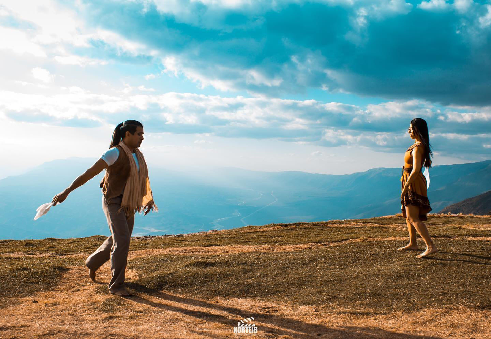
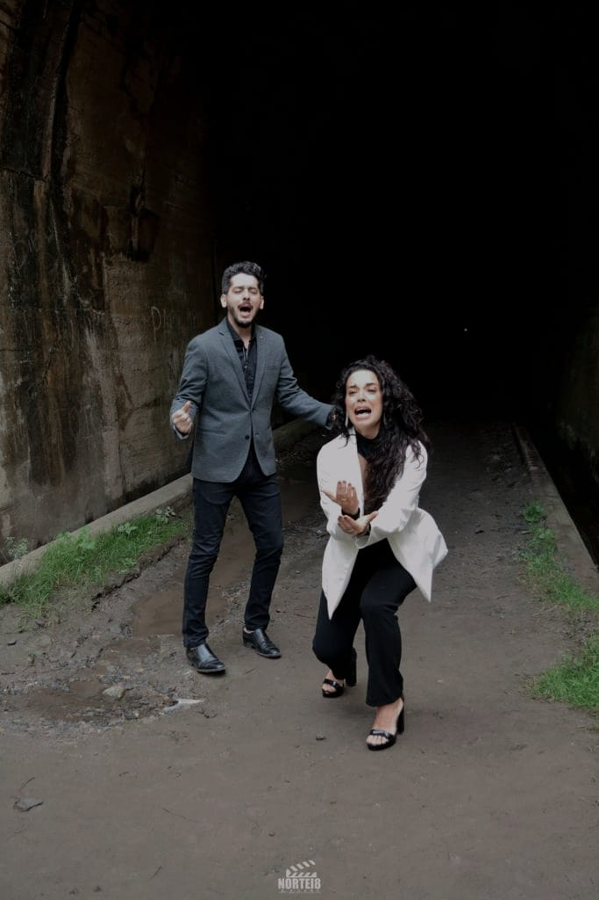
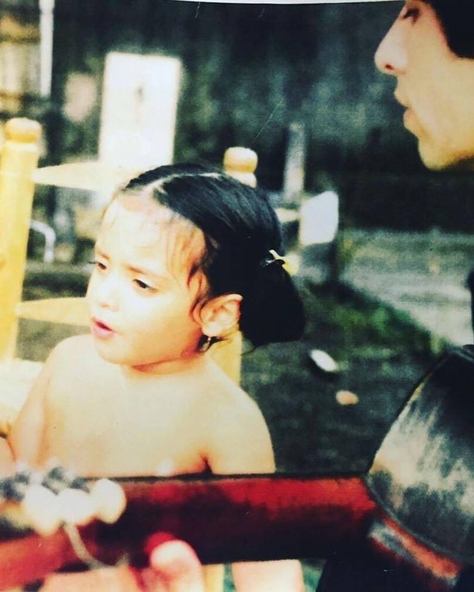
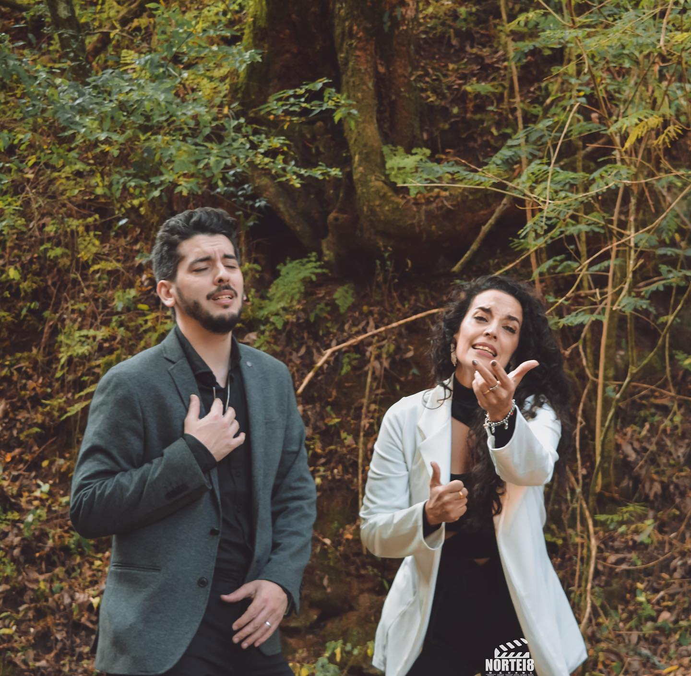

REPERTORIO
A continuación, podrás ver las letras de lo último de nuestro repertorio!
YO VENDO UNOS OJOS NEGROS:
Yo vendo unos ojos negros, quien me los quiere comprar? los vendo por hechiceros, por que me han pagado mal. Yo vendo unos ojos negros, quien me los quiere comprar? los vendo por hechiceros, por que me han pagado mal. Más te quisiera. más te amo yo. y todas las noches la paso, suspirando por tu amor. Más te quisiera, más te amo yo. y todas las noches la paso, suspirando por tu amor. Ojos negros traicioneros, por que me mirais así? Tan alegres para otros, y tan tristes para mi. Más te quisiera más te amo yo y todas las noches la paso suspirando por tu amor.


DE CATAMARCA A ATACAMA
El pecho me va latiendo como caja en carnaval, El pecho me va latiendo como caja en carnaval. Y por la sangre me suben, los humos de mi lagar, El pecho me va latiendo como caja en carnaval! Camino cerca del cielo, llevo vino de Pomán, y un beso de madrugada, de un amor de Andalgalá. Camino cerca del cielo, llevo vino de Pomán Cuando llegue a aquella tierra, con el alma estremecida, algún pañuelo en el aire me dará la bienvenida, cuando llegue a aquella tierra con el alma estremecida. Dicen que el vino chileno es bueno pero entrador, dicen que el vino chileno es bueno pero entrador. Por las dudas llevo el mío, para no pasar calor. Dicen que el vino chileno es bueno pero entrador. Y para bailar la cueca, nadie como la chilena, tintineando mis espuelas, me enredaré en su pollera. Y para bailar la cueca, nadie como la chilena. Cuando vuelva de esa tierra, con el alma estremecida, algún pañuelo en el aire me dará la despedida, cuando vuelva de esa tierra con el alma estremecid
A MONTEROS.
A ella que le gusta que todos la nombren Con una guitarra y un bombo legüero A ella que le gusta que le enciendan coplas Por eso te nombra mi canto Monteros A ella que le gusta que le enciendan coplas Por eso te nombra mi canto Monteros A ella que me viera de chango mirando Al ingenio tibio corazón de hierro A ella que las cañas la visten de verde Por eso te nombro en mi canto Monteros A ella que las cañas la visten de verde Por eso te nombro en mi canto Monteros Y más dulce que tus guarapos Son las niñas que hay en tu pueblo Sé que por tus venas de azúcar despierta Toda la alegria mi linda Monteros A ella que el poeta la vio tempranera Tarareando duendes de vinos pateros Y dejó en su cielo la rosa galana Por eso te nombra mi canto Monteros Y dejó en su cielo la rosa galana Por eso te nombra mi canto Monteros A ella que en noviembre le pide a los grillos Otra vez el canto del hombre zafrero A ella que le gusta que le enciendan coplas Por eso te nombra mi canto Monteros A ella que le gusta que le enciendan coplas Por eso te nombra mi canto Monteros Y más dulce que tus guarapos Son las niñas que hay en tu pueblo Sé que por tus venas de azúcar despierta Toda la alegria mi linda Monteros.

CUANDO VUELVO A CATAMARCA
Siento que se alegra el alma, Cuando vuelvo a Catamarca, Por el jazmín de las chacras, Y el sabor a serenata. Tengo los brazos abiertos, De algún amigo en Pirquitas, Cuando le entrego mi canto, Ya siento su vidalita. Hay cantores y cantores, Para adentro y para afuera, Cantor que canta a su tierra, No ha de callar aunque muera. Algún día he de quedarme, Y el corazón me dirá, Gracias hermano del alma, Ahora no me lleves más. El destino de cantor, Me hace volver a mi pueblo, Allí quedó mi niñéz, Y mis mejores recuerdos. Qué difícil es partir, Me dice el amigo Márquez, Esta condición de gente, No se encuentra en todas partes. Los días de aquel ayer, En mi pecho se agigantan, No quiero seguir hablando, Se me anuda la garganta. Algún día he de quedarme, Y el corazón me dirá, Gracias hermano del alma, Ahora no me lleves más.
MIS NOCHES SIN TI
Sufro al pensar que el destino logró separarnos. Guardo tan bellos recuerdos, que no olvidaré. Sueños que juntos forjaron tu alma y la mía, y en las horas de dicha infinita, que añoro en mi canto y no han de volver. Hoy, que en mi vida tan sólo queda tu recuerdo. Guardo tus besos sedientos, que saben a mi. Y tu cabellera sedosa, acaricia mis sueños. y me estrechan tus brazos amantes,al arrullo suave del amor de ayer. Mi corazón en tinieblas te busca con ansias. Y rezo tu nombre pidiendo que vuelvas a mí porque sin ti ya ni el sol ilumina mis días y al llegar la aurora me encuentra llorando... mis noches sin ti.

TIENES QUE SEGUIR
No es una derrota si en medio del camino, Algo no sucede como has querido. Tienes que pensar que vas llegando, Que es otra enseñanza para ti. Aquí llega lejos quien no detiene su andar, Y quien mas veces se logra levantar. Por eso tienes que seguir, Hay un gran sueño a descubrir. Quizás lo encuentres doblando en la esquina, O quizás lleve tiempo, Pero tienes, tú tienes que seguir. Quisiera ayudarte a cargar con el hastío, Es que tu tristeza nunca la he querido. Tienes que saber que yo no puedo, Que ese es un trabajo para ti. Ya lo miraras desde muy lejos y sabrás, Que yo estuve allí hace un tiempo atrás. Por eso tienes que seguir, Hay un gran sueño a descubrir. Quizás lo encuentres doblando en la esquina, O quizás lleve tiempo, Pero tienes, tú tienes que seguir.